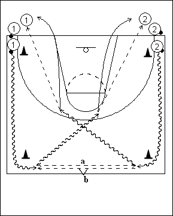

Catégorie : ECHAUFFEMENT (Ech-004)
Déroulement
- Deux files à la baseline. Les deux ou trois premiers joueurs de chaque file possèdent un ballon.
- Les joueurs travaillent par vagues de deux. Les deux premiers partent en même temps et dribblent jusqu’à la ligne médiane. Après avoir contourné les cônes, ils échangent leurs ballons; d’un côté on réalise la chest pass (a) et de l’autre la bounce pass (b). Les joueurs repartent ensuite en dribble vers le panneau du début et passent aux premiers joueurs sans ballon. La vague suivante démarre dès que les joueurs précédents ont échangé leurs ballons.
- 1 va en 2 et 2 va en 1.
Coaching points
- Insister sur le timing; les deux joueurs doivent partir en même temps et arriver ensemble à la ligne médiane.
- Dès que le drill se déroule correctement, on passe aux variantes suivantes :
a) Au retour, le joueur 1 continue à faire la passe vers la file 2, tandis que le joueur 2 réalise un lay-up, son rebond et ensuite seulement la passe vers la file 1
b) Idem, en inversant les rôles.
c) Idem que a, mais 2 effectue un jump shoot au lieu d’un lay-up.
d) Idem que c, mais en inversant les rôles.
e) Au retour, le joueur 1 effectue un lay-up, son rebond et la passe dans la file 2, tandis que 2 réalise un jump shoot, son rebond et la passe dans la file 1.
f) Idem que e, mais en inversant les rôles.